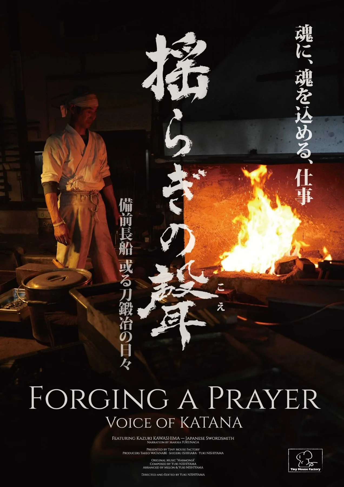
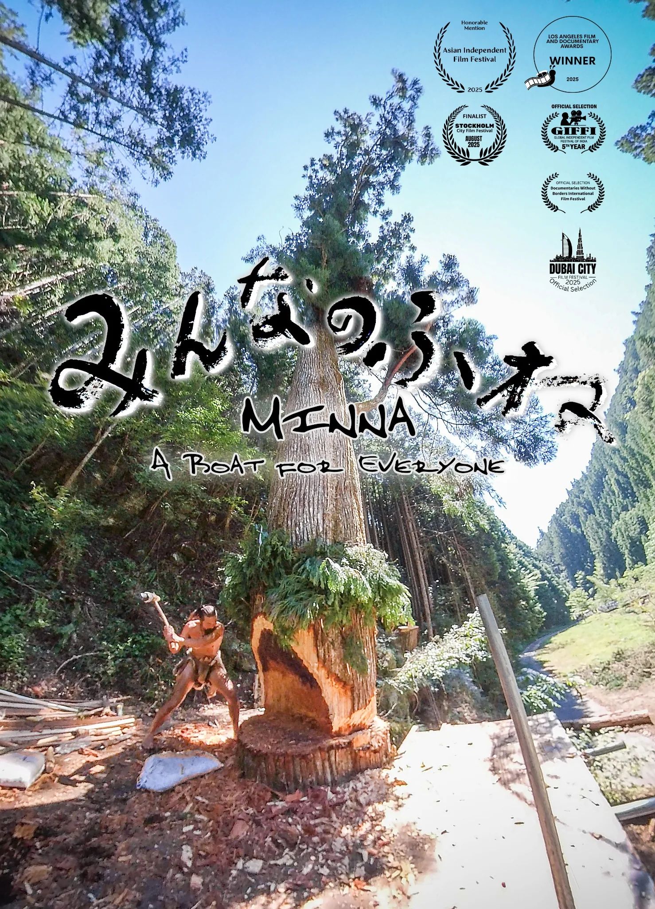

Forging a Prayer
Forging a Prayer – Voice of the KATANA
A year of crafting a votive sword, beginning with a sacred forging ritual held in Bizen Osafune for the first time in about a century.
Documentary films produced by Tiny Mouse Factory.
Distinct worlds, brought together in a growing body of work.

Forging a Prayer – Voice of the KATANA
A year of crafting a votive sword, beginning with a sacred forging ritual held in Bizen Osafune for the first time in about a century.

Minna: A Boat for Everyone
A documentary following more than two years of building a dugout canoe using stone axes.
Director Q&As, lectures, and online talks can accompany film screenings.
Programs can be tailored to schools, municipalities, community screening groups, and their audiences.